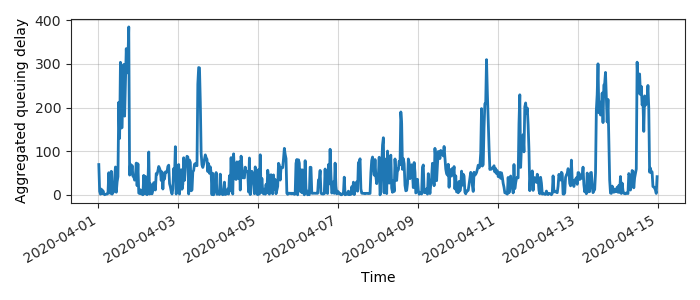
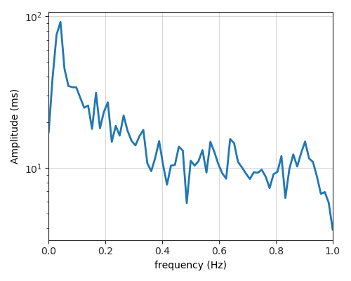
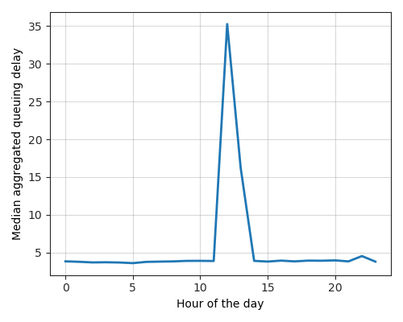
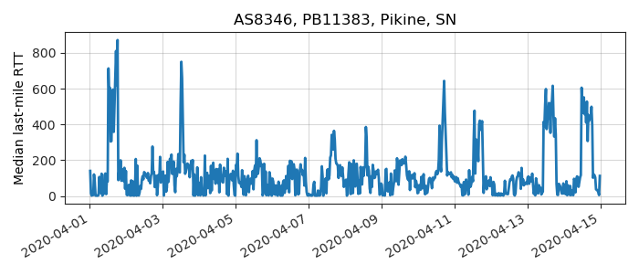
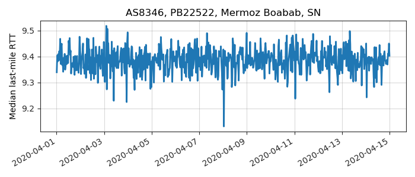
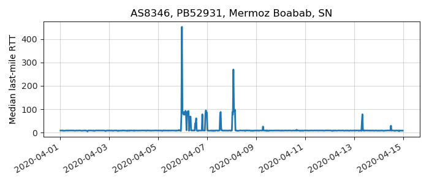

---
layout: default
title: Last-mile delay survey / 2020-04-01 / AS8346
---
AS8346, SONATEL-AS Autonomous System, SN
Summary
- Daily last-mile fluctuations: severe
- Number of probes: 4
- APNIC eyeball rank: 189
- Daily fluctuations: True
- Main frequency: 0.0417
- Average peak-to-peak amplitude: 91.65ms
Aggregated last-mile queuing delay

Periodogram

24H profile

Probes' last-mile RTT

- 
- 
- 